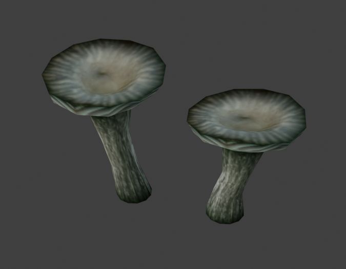

|
Asset Lifecycle Developer(s): Revenant Reviewer(s): Fremennik Status: ☀️ Ready for review Asset Status Priority: Low Type: 🌳 Flora Files |

Part of fungi frenzy pack, "verdignis navel"from there. For use inside caves of Kacari/Disane, maybe even Kaer itself? Looks very universal. Also, may need permission from Frem, since it's reviewed. Would need one more quick review over file structure/IDs though.
|
 Unknown Revenant's model from Fungi Frenzy pack |